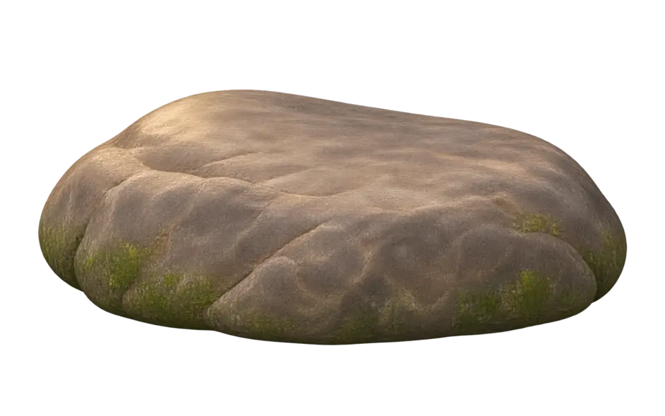

Choose the strongest response for this situation.
Why this matters & evidence
These sources explain the topic. The scenario, preferred response and scores are authored teaching choices.
A fictional catchment faces ten proposed data-centre campuses. Explore two animal perspectives and help a community protect its river.

Play & learn
Explore wetlands with the beaver or follow the food web with the otter. Read each situation, weigh three approaches and see what your choice could mean.
Fictional scenario · The animals are story guides. The ten campuses are not a claim about a real place.
Your nickname and progress are saved only in this browser. You can clear them with “Start a new game”.
Welcome back
River health starts at 60/100. It is a simplified game score for the protection supported by your choices, not a measurement or prediction.
Civic knowledge starts at 0/50. Each choice earns 3, 6 or 10 points for how well it connects evidence to action in that situation. There is one strongest response and useful lessons in every choice.
The illustrated outlook changes with your score. Real rivers respond over time; outcomes depend on local conditions, decisions and follow-through. The source links explain the background, not the game’s invented point values.
Game scores, not measured conditions. Real changes take time. How scoring works
Choose the strongest response for this situation.
These sources explain the topic. The scenario, preferred response and scores are authored teaching choices.
Your river report
These are learning scores, not a forecast of a real river’s health or a guarantee of campaign success.
Revisit each choice, compare the approaches and follow the evidence.
Meet the neighbours
Understanding an ecosystem is the beginning. Lasting protection also requires people to organise around evidence and make environmental limits impossible for decision makers to ignore.
By building dams, beavers can slow streams and create ponds and wetlands. These habitats can store water, trap sediment and support many species.
Beaver effects vary by location; benefits and conflicts both need assessment. Read NatureScot’s beaver guide.
Otters depend on aquatic prey and connected habitat. Healthy fish and invertebrate populations help support healthy otter populations.
Pollution and habitat loss can disrupt prey, shelter and movement. Protecting water quality benefits the wider food web otters rely on. Explore the EPA’s river monitoring guide.
People can connect ecological evidence to public decisions: request records, join consultations, contact elected representatives and regulators, build coalitions and demand measurable safeguards.
Effective advocacy identifies the decision, deadline, evidence and remedy. It remains factual, transparent and persistent, then monitors whether promised protections are actually delivered. Explore catchment evidence and community action.
From evidence to power
Our advocacy principle: public decisions should protect ecological limits, community wellbeing and future generations. Communities can put that principle into practice through evidence, broad participation and specific, accountable requests.
Map water use, energy demand, emissions, habitat, noise and cumulative effects. Use official records, independent expertise and lived local knowledge.
Bring residents, environmental groups, scientists, anglers, farmers, schools and affected workers around a short set of shared protections.
Use consultations, planning observations, meetings, petitions and public representatives to seek enforceable limits, not vague environmental promises.
Track permits, conditions and real-world performance after approval. Publish results, challenge non-compliance and return to the decision maker with evidence.
Digital infrastructure, living landscapes
Data centres support the online services people use every day, but their ecological footprint is not one simple number. It depends on how electricity is supplied, how cooling works, where a campus is built and how water, heat, noise and habitat are managed.
National grid
Servers and cooling equipment need electricity continuously. The climate effect depends on efficiency, the real-time generation mix and whether demand can move away from periods when the grid is under pressure.
Background evidence: SEAI: Energy in Ireland 2025 (PDF, 2024 data)
A local lens
Irish context · historical 2024 figure: SEAI reports that data centres accounted for 21.2% of Ireland's electricity demand in 2024. EPA guidance also notes that data centres can require large volumes of cooling water and that water abstraction itself can place pressure on the environment.
Watch and explore
Begin with water and ecosystems. The optional technology discussion then explores a shared question: how can the public scrutinise evidence and hold powerful organisations accountable?
Water and sanitation
This short explainer introduces UN Sustainable Development Goal 6: ensuring access to clean water and sanitation. It connects safe water and sanitation with healthier communities and ecosystems.
Watch the original videoOptional wider context · AI governance
This Democracy Now! discussion considers AI oversight and accountability. Use it to compare questions about transparency and public scrutiny; it is not evidence of ecological harm in this fictional catchment.
Watch the original discussionWater quality basics
Its health depends on chemistry, temperature, flow, habitat and the organisms living there. Small changes upstream can travel through the whole ecosystem.
Fish and aquatic invertebrates need oxygen dissolved in the water.
Warmer water can hold less oxygen and may stress cold-water species.
Too much nitrogen or phosphorus can drive algal growth and oxygen loss.
Excess fine sediment can cloud water and smother habitat used for feeding or spawning.